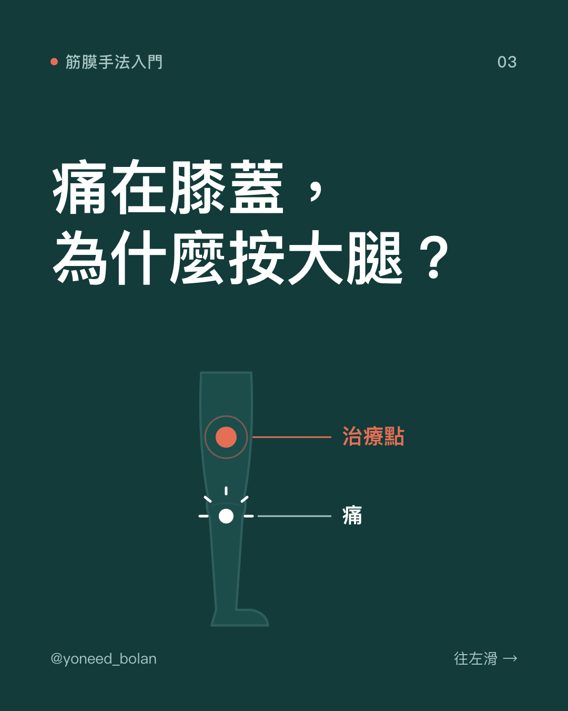
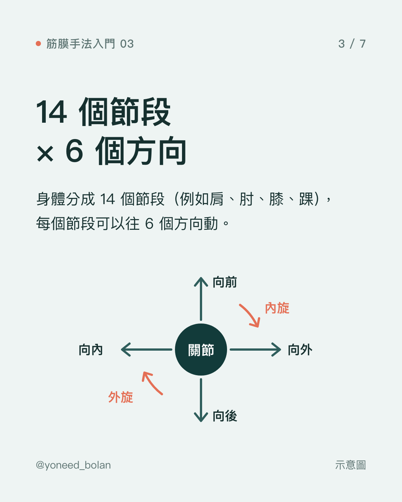
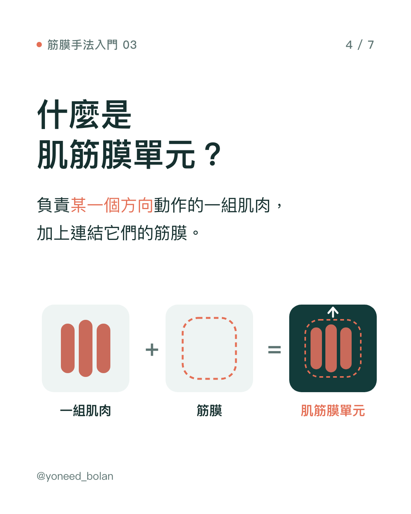
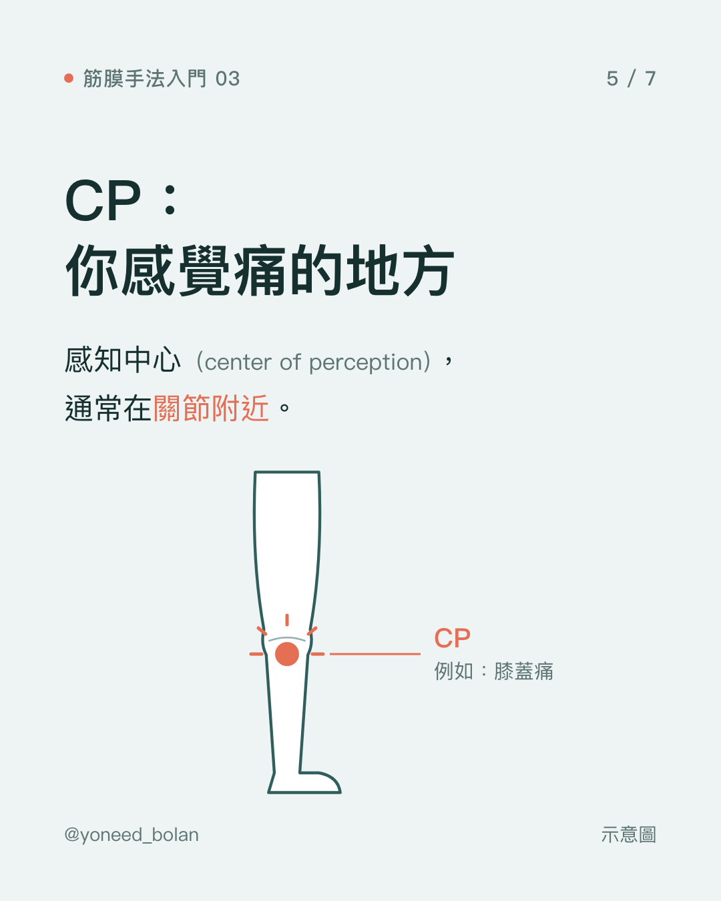
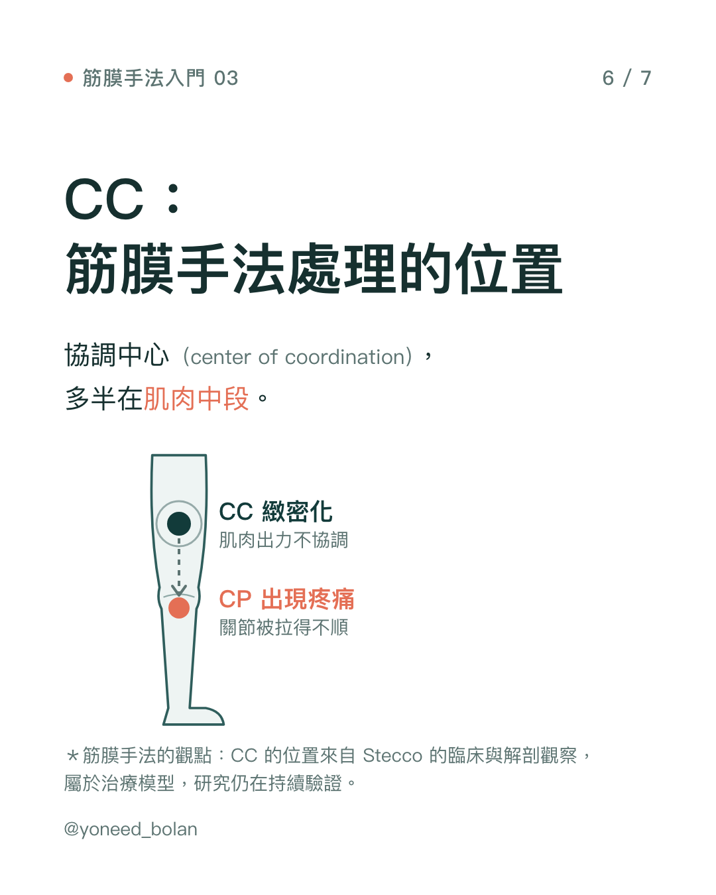

衛教文章・筋膜手法入門 03
痛在這裡，問題在那裡：協調中心（CC）與感知中心（CP）
重點
- 筋膜手法把身體分成 14 個節段，每個節段有 6 個動作方向。
- 負責同一個方向的一組肌肉，加上連結它們的筋膜，稱為「肌筋膜單元」（myofascial unit）。
- 感到痛的地方叫感知中心（CP），多在關節附近；治療常處理的位置叫協調中心（CC），多在肌肉中段。
- CC 與 CP 是 Stecco 根據臨床與解剖觀察建立的治療模型，研究仍在持續驗證。





在工作室最常被問的一句話是：「我痛的是膝蓋，為什麼你在按大腿？」這篇說明筋膜手法怎麼看待疼痛的位置，以及為什麼治療的點常常不在最痛的地方。
身體的地圖：14 個節段、6 個方向
筋膜手法把身體分成 14 個節段，包括頭、頸、胸、腰、骨盆、肩胛、肩、肘、腕、手指、髖、膝、踝、足。每個節段都可以往 6 個方向動：
- 向前、向後
- 向內、向外
- 內旋、外旋
這樣分類的目的，是把「哪裡痛」轉換成「哪個節段、哪個方向的動作出了問題」。例如膝蓋往前伸直時痛，和膝蓋轉動時痛，在這套模型裡指向的是不同的組織。
肌筋膜單元：一起出力的一組肌肉
讓一個節段往某個方向動，通常不是單一條肌肉在出力，而是一組肌肉一起合作。筋膜手法把「負責某一個方向的一組肌肉，加上連結它們的筋膜」稱為一個肌筋膜單元。
例如讓膝蓋往前伸直的肌肉，主要是大腿前側的股四頭肌群。它們的筋膜彼此相連，在模型裡被視為同一個單元。
CP：你感覺到痛的地方
每個肌筋膜單元有一個感知中心（center of perception，CP）。這是單元出問題時，你最容易感覺到痛的位置，通常在關節附近。
以膝蓋伸直的單元為例，CP 在膝蓋前側。所以這個單元出問題時，你會說「膝蓋痛」。
CC：協調出力的位置
每個肌筋膜單元還有一個協調中心（center of coordination，CC）。依模型的說法，這是協調這組肌肉一起出力的位置，多半在肌肉中段，也就是幾條肌肉的力量交會、筋膜張力集中的地方。
筋膜手法的看法是：CC 一旦緻密化（見上一篇），肌肉出力就變得不協調，關節被拉得不順，痛才出現在 CP。所以膝蓋前側痛，治療師可能會在大腿前側中段找到明顯緻密的位置，治療也會落在那裡，而不是只按最痛的那一點。
證據強度：CC 與 CP 的位置，來自 Luigi Stecco 長期的臨床觀察，以及 Stecco 團隊的解剖研究，是一套治療模型（Stecco, 2004）。以肩痛為例，一篇 28 人的前導研究發現，用這套方法治療後疼痛下降（Day et al., 2009），但這個研究沒有對照組，只能算初步結果。整體來說，系統性回顧認為筋膜手法改善疼痛與失能的證據品質為「低到中等」（Arumugam & Harikesavan, 2021）。
這對你有什麼意義？
- 最痛的地方不一定是要處理的地方。只在痛點上按摩、熱敷，有時效果有限，可能是因為問題不在那裡。
- 評估比治療更花時間是正常的。治療師需要從你的動作、病史和觸診，判斷是哪個節段、哪個方向出了問題。
- 這是工具之一，不是萬用解答。有些疼痛來自骨骼、神經、內臟或其他疾病，需要不同的處理。
什麼時候該先就醫？疼痛嚴重或持續惡化、夜間痛到睡不著、伴隨麻木無力、發燒、不明原因體重減輕，或是外傷後劇痛，請先尋求醫師評估。這篇文章是衛教資訊，不能取代個人的診斷與治療。
重點整理
- 筋膜手法用「節段 × 方向」把疼痛轉換成動作問題。
- 每個肌筋膜單元有 CP（感覺痛的地方）和 CC（協調出力的地方）。
- 治療常落在 CC，所以按的位置可能離痛點有一段距離。
- 這套模型有初步研究支持，仍在持續驗證中。
參考文獻
- Stecco L. Fascial Manipulation for Musculoskeletal Pain. Padova: Piccin; 2004.（筋膜手法教科書）
- Day JA, Stecco C, Stecco A. Application of Fascial Manipulation technique in chronic shoulder pain—anatomical basis and clinical implications. J Bodyw Mov Ther. 2009;13(2):128–135. doi:10.1016/j.jbmt.2008.04.044.
- Arumugam K, Harikesavan K. Effectiveness of fascial manipulation on pain and disability in musculoskeletal conditions. A systematic review. J Bodyw Mov Ther. 2021;25:230–239. PMID: 33714501.